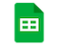

1. Spreadsheets Recap#
In this week’s tutorial, we will learn or revise how to use spreadsheets to manipulate and store data.
1.1. Basics#
Two common software packages used for spreadsheets are Microsoft Excel and Google Sheets.

Fig. 1.1 Basic view of Microsoft Excel (left) and Google Sheets (right)#
Spreadsheets are laid out in cells, and each cell has a unique cell reference - a letter for the column, and a number for the row. In the example, cell C3 is active (selected), and this is indicated in the top left.
Next to that is a formula bar, showing the formula which has been typed into the active cell. It is =B3+1, indicating this cell should show a number one more than the value found in B3.
A group of cells is called a range - the cells A2, A3, A4 and A5 have been coloured blue in the example, and we could denote these as A2:A5, using a colon to indicate a range.
1.2. Spreadsheet Practice#
Exercise 1.1
(a) Download the Excel spreadsheet file linked below, or use a browser to open the Google Sheets version.
Tutorial 0 - Spreadsheet Practice.xlsx
Tutorial 0 - Spreadsheet Practice (Google Sheets)
(b) Work through the tabs of the spreadsheet, completing the indicated tasks on each tab.
1.3. CSV files#
Files with the extension .csv are comma-separated variables, which can be used to store data in a format that’s compatible across different systems. Data in CSV files is separated by commas, with rows of data separated by line breaks, and CSVs can be imported and exported easily from spreadsheets.
item 1, item 2, item 3, item 4
more items, go here, look at them, lovely items
CSVs often have a header row, listing the different categories, then below that, the data itself.
Name, Occupation, Favourite colour
Spider-Man, crime fighter, red
Tinky Winky, handbag designer, purple
Billie, musician, acid green
If the data in your CSV needs to include commas, you can use quote marks to enclose entries so the software doesn’t interpret the comma as an extra column.
Movie title, Release year, Lead actors
"Monsters, Inc", 2001, "Billy Crystal, John Goodman"
"Three Billboards Ouside Ebbing, Missouri", 2017, "Frances McDormand, Woody Harrelson"
"The Good, The Bad and The Ugly", 1966, "Clint Eastwood, Eli Wallach"
.csv files are essentially text files, and can be opened in a text editor like Notepad (on Windows) or Textedit (on a Mac).
Exercise 1.2
(a) Download the CSV file linked below.
(b) Open the file using a text editor and look at the contents.
(c) Create a new blank spreadsheet file, and import the CSV file into the spreadsheet. See how it looks in the spreadsheet.
(d) Create another new blank spreadsheet, and make up some dummy data in the cells of the first tab.
(e) Export the tab as a .csv file and look at that file in a text editor.
Exercise 1.3
(a) Download the CSV file of Scrabble scores below, and import it into a new blank spreadsheet. Use the formulae you learned earlier to make a Scrabble Word Score Calculator. You can add rows and modify the spreadsheet as much as you want - there should be a set of cells you can type a word into and another one that tells you how much it’s worth in Scrabble.
(b) Download the CSV file below, showing a list of items from a receipt from a restaurant meal, and who ordered which items. Use it to build a spreadsheet to calculate how much money each person owes, and the total bill.